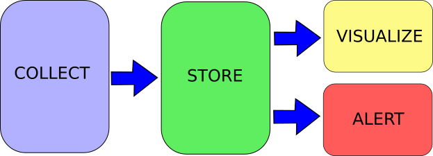
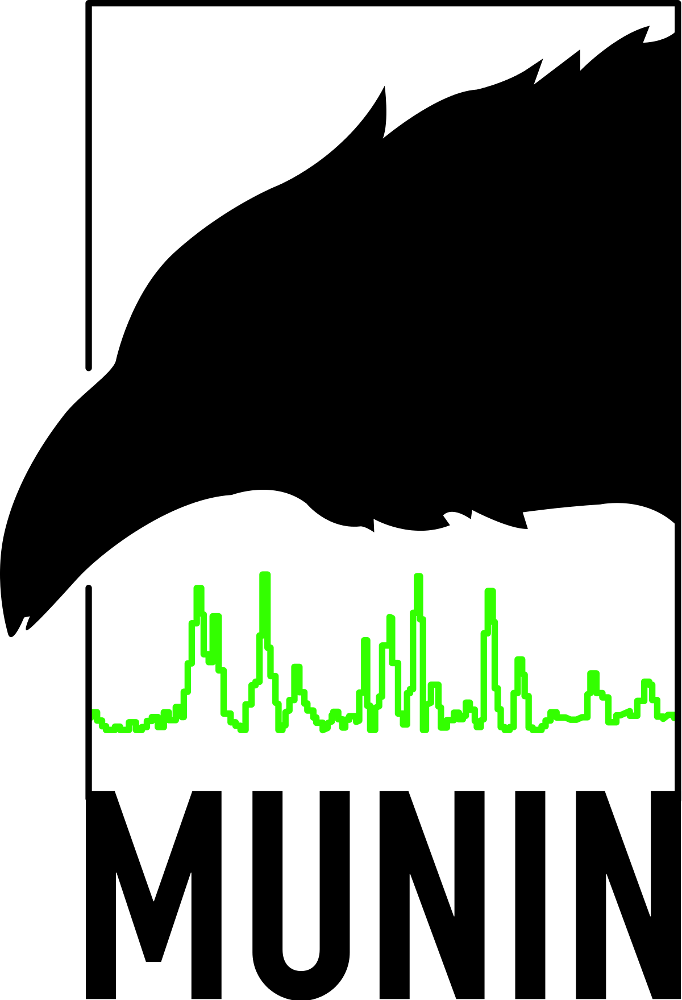
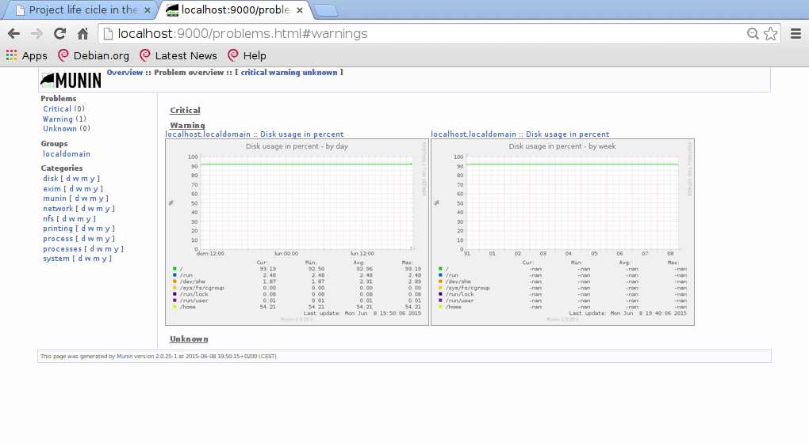
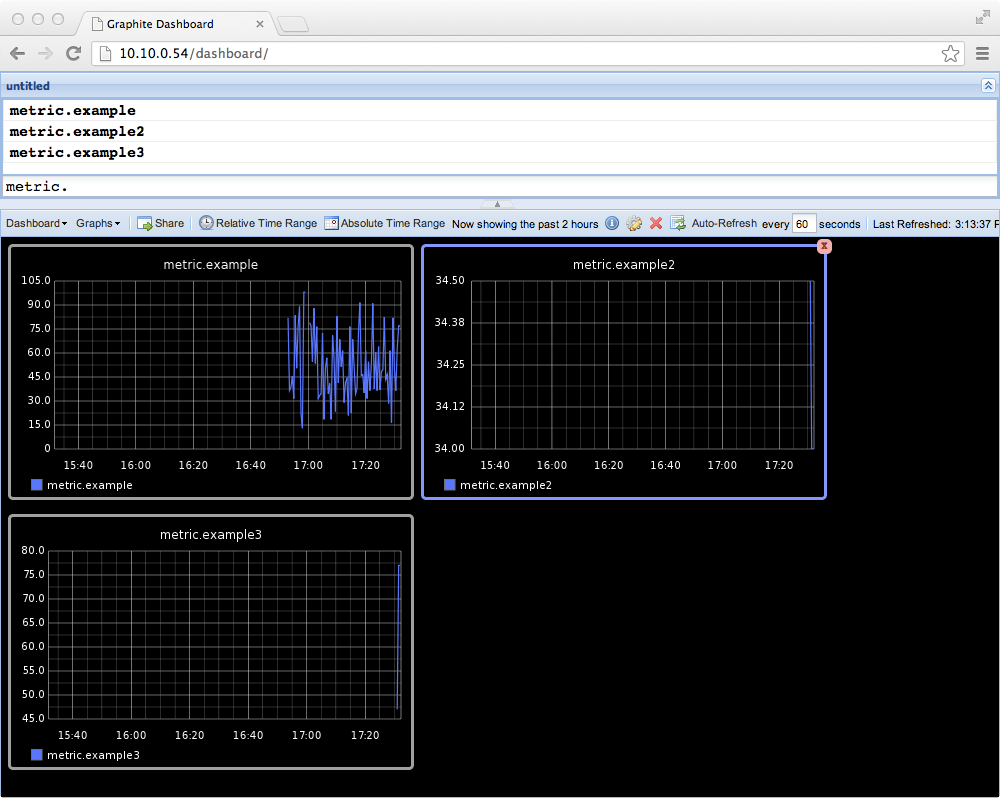
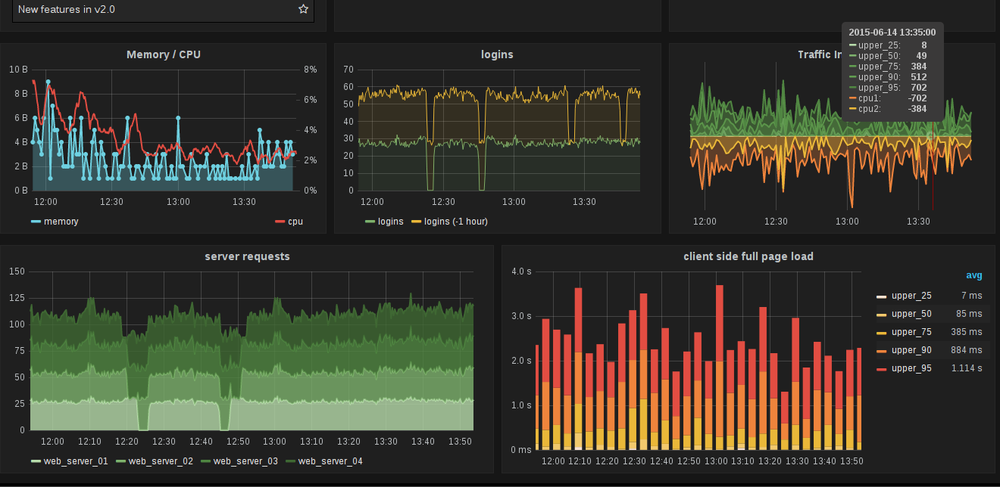
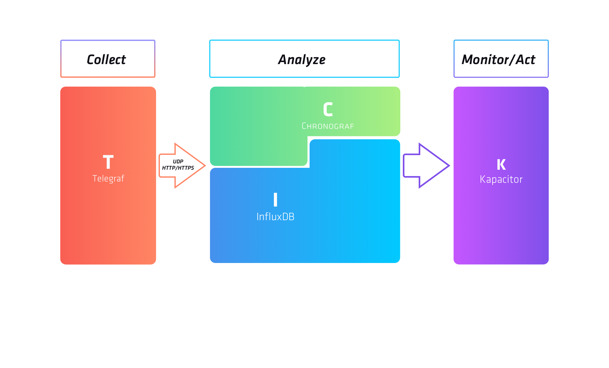
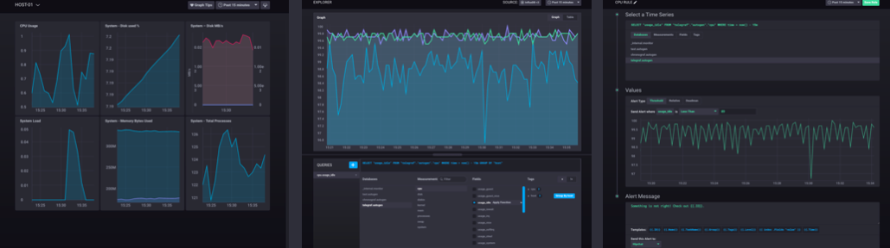

Monitorización y alertado
Miguel Ángel García
http://magmax.org
¿Qué monitorizar/alertar?
- Sistema
- Programa en ejecución
- Tendencias
- Aplicación
- Logs
Arquitectura de aplicaciones
Ventajas
- Obtener datos de lo monitorizado
- Comparar con datos anteriores
- Comparar con otras máquinas/programas
- Previsión de recursos
- Ahorro de costes
- Detección precoz de problemas
Arquitectura general
Tipos de datos
- Numéricos:
- Visitas por página
- Usuarios activos
- Textuales:
- Mensajes de error
- Agrupados:
- Queries lanzadas por una request
- Accesos a disco por operación
Tipos de datos
- Contínuos:
- Consumo de CPU/RAM
- Discretos:
- Mensajes de error
- Subida a producción
Cuidado, porque los discretos pueden cambiar a contínuos:
- Visitas a una página web
Problemas
- Espacio
- I/O
- Red
- Falsos positivos/negativos
- Flapping
- Principio de incertidumbre de Heisenberg
Munin
- Perl
- Sencillo
- RRD
- Estático en /var/cache/munin/www
- Ideal para monitorizar rápidamente el sistema
# apt-get install munin munin-node
# munin-node-configure --suggest --remove-also --shell | bash
Munin
Usando docker-compose:
version: "3"
services:
munin:
image: buildfailure/munin-server
ports:
- 10000:8080
environment:
- "MUNIN_USER=guest"
- "MUNIN_PASSWORD=guest"
- "NODES=node01:localhost"
Y el servidor estará en http://localhost:10000
(necesita 5 minutos para calentar)
Munin
Graphite
- Python/Django
- API web
- Whisper (evolución de RRD)
- Soporta eventos discretos
- Permite graficar cualquier cosa basada en tiempo
# apt-get install graphite-web
Graphite
Grafana
- Go
- IDE para Graphite, InfluxDB, ElasticSearch, ...
- Muy muy molón y configurable
Grafana
Graphite y Grafana
version: "3"
services:
graphite:
image: sitespeedio/graphite
ports:
- 10010:80
diamond:
image: lesaux/diamond-containercollector
environment:
- GRAPHITE_HOST=graphite
grafana:
image: grafana/grafana
ports:
- 10011:3000
Load the dashboard "43"
Sentry
- Python/Django
- API Rest accesible con la librería "Raven"
- Monitorización de aplicaciones, ya que agrupa logs
- Lo fácil es configurar un handler del logger, pero se pierde información.
- Para sacarle partido es necesario tener cuidado al enviar los mensajes.
Sentry

Sentry
version: "3"
services:
redis:
image: redis
postgres:
image: postgres:9.6
environment:
- POSTGRES_USER:sentry
- POSTGRES_PASSWORD:sentry
sentry_upgrader:
image: sentry:8.14
env_file:
sentry.env
command: "sentry upgrade"
web:
image: sentry:8.14
depends_on:
- redis
- postgres
env_file:
sentry.env
ports:
- 10020:9000
worker:
image: sentry:8.14
depends_on:
- redis
- postgres
env_file:
sentry.env
command: "sentry run worker"
beat:
image: sentry:8.14
depends_on:
- redis
- postgres
env_file:
sentry.env
command: "sentry run cron"
ELK + beats
- ElasticSearch + Logstash + Kibana
- No es libre, pero tiene versión community
- Realmente se pueden usar por separado
- Muy útil para logs
- Java + JRuby
- Beats en Go, muy optimizados

version: "3"
services:
elasticsearch:
image: docker.elastic.co/elasticsearch/elasticsearch:5.3.0
ports:
- 10030:9200
environment:
- http.host=0.0.0.0
- transport.host=127.0.0.1
kibana:
image: docker.elastic.co/kibana/kibana:5.3.0
ports:
- 10031:5601
environment:
- ELASTICSEARCH_URL=http://elasticsearch:9200
metricbeat:
image: athieriot/metricbeat:5.3.0
environment:
- ELASTICSEARCH_URL=http://elasticsearch:9200
volumes:
- "./metricbeat.yml:/metricbeat/metricbeat.yml"
topbeat:
image: prima/filebeat:5.2
volumes:
- "./filebeat.yml:/filebeat.yml"
TICK Stack
- Software libre: MIT license
- Go
- 4 componentes:
- Telegraf
- Influxdb
- Chronograf
- Kapacitor
TICK Stack
TICK Stack
TICK Stack
Toda la información para levantarlo con docker en su repositorio:
https://github.com/influxdata/TICK-docker/
Otros sistemas de monitorización
Resumiendo
- Hemos visto 5 sistemas de monitorización diferentes:
- Munin
- Graphite/Grafana
- Sentry
- ELK
- TICK Stack
- Cada uno tiene puntos fuertes
- No hay excusa para no monitorizar
Preguntas
Créditos
- Miguel Ángel García
- Twitter: @magmax9
- Blog: http://magmax.org
- Esta presentación: http://magmax.org/charla-monitorizacion
- Código fuente: https://github.com/magmax/charla-monitorizacion